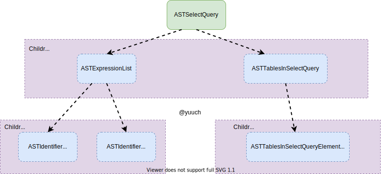
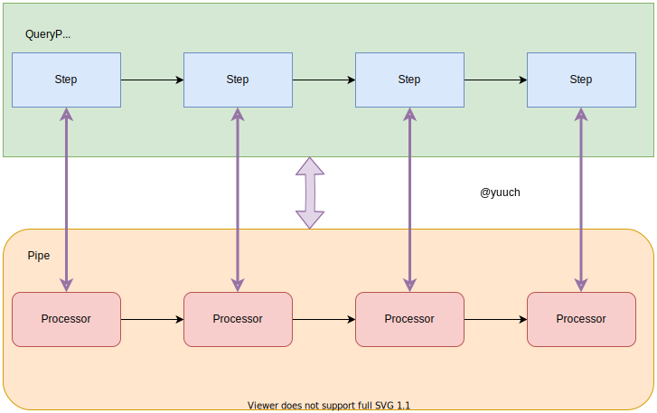
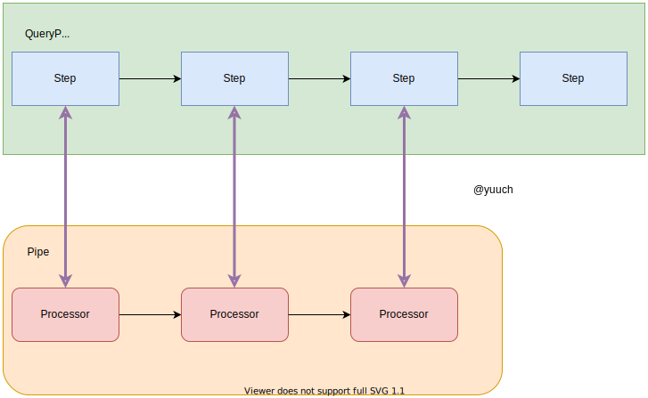

Introduction
Summary
数据库内核开发相对来说是一个比较冷门的专业（持疑问态度?） 本书抛砖引玉，可以作为对数据库内核开发有一定兴趣的新手的入门材料。另一方面，也是记录本人学习的过程。希望有更多的人加入数据库内核开发，特别是ClickHouse。 一般来说数据库可以粗略的分为计算层与存储层。本书同样也按照这个分了两个大模块，第一个模块详细介绍计算层，也就是数据库是如何把一个用户给的SQL执行，直到输出结果的过程。第二个模块将会详细介绍MergeTree,这是ClickHouse底层的存储。
在学习数据库内核的过程中，个人感受就是对于有些东西没有概念，甚至不知道它是个啥，学起来就会十分的迷茫。比如我刚开始接触的时候甚至连AST(Abstract Syntax Tree)都不知道是什么，于是学习起来就十分的迷茫和折磨。
part1 sql执行流程
- SQL -> AST
- AST -> AST optimized
- AST optimized -> Actions
- actions -> QueryPlan
- queryPlan -> QueryPipeline
- QueryPipeline执行
part2 MergeTree
- MergeTree的基础
- Merge的过程
- Mutation的过程
- derivation of MergeTree
SQL to AST
一般来说，ClickHouse 服务端会监听不同的端口，以支持不同的协议， 一般情况下是（TCP：9000， MySQL：3306， HTTP：8123）等。 客户端通过一种协议连接上之后，发送SQL给服务端，服务端根据协议从网络包里拿到SQL， 这些属于网络开发，故不赘述。 拿到SQL之后，才真正算是进入了数据库服务端的地盘。 那么拿到SQL之后，数据库会怎么处理呢？当然是解析SQL，并把它保存在一种程序方便处理的数据结构， 抽象语法树 AST(Abastract Syntax Tree).下文我们会讲讲Clickhouse的解析器。
AST
插播一手AST。 抽象语法树？是啥？ 首先它是一个树。为什么得是一个树呢？ 因为有的SQL查询会嵌套好多层，树就很适合这种递归的结构。 还有就是它的用途是用来表达抽象的语法的，故叫抽象语法树。 说到这，还是抽象语法树还是满抽象的。或许举个例子，就会好很多。ClickHouse是一个OLAP数据库， 最常用到的SQL应该就是Select了，下边我们将会举一个Select 是如何转换成抽象语法树的例子。
IAST
IAST是抽象语法树的BaseClass，其它的类都继承它。
IAST的结构非常简单，它只有一个children成员，本质就是一个vector<IAST>.
// ASTs
class IAST;
using ASTPtr = std::shared_ptr<IAST>;
using ASTs = std::vector<ASTPtr>;
// IAST
class IAST : public std::enable_shared_from_this<IAST>, public TypePromotion<IAST>
{
public:
ASTs children;
//...
}
这样的数据结构和树怎么联系上呢？

画成这样是不是有树的感觉了呢？
ASTSelectQuery
这里开始讲一下SelectQuery的抽象语法树， 在ClickHouse中，Select语句中常见的keyword如下：
enum class Expression : uint8_t
{
WITH,
SELECT,
TABLES,
PREWHERE,
WHERE,
GROUP_BY,
HAVING,
WINDOW,
ORDER_BY,
LIMIT_BY_OFFSET,
LIMIT_BY_LENGTH,
LIMIT_BY,
LIMIT_OFFSET,
LIMIT_LENGTH,
SETTINGS
};
于是SelectQuery就分别每个keyword解析为一种AST， 然后放在Children对象里，大致的结构图如下

此时我们对抽象语法树，大概有了一个认识。下边开始讲解析。
Parser解析
比起大部分的解析器，用了YACC等辅助工具，ClickHouse的解析器就显得十分的朴素了， 是手工打造的。 对于刚开始学数据库的小白来说，算是比较友好的一种类型，因为看得懂 ：） 下边会介绍一些基本的概念，以及列举一些代码解释ClickHouse是如何解析SQL的。
Tokens
token在网上搜索它的意思是：
Token在计算机身份认证中是令牌（临时）的意思，在词法分析中是标记的意思。
在我们这里的上下文，它就是标记的意思。那么标记又是什么意思呢？ 说的通俗点，可以粗略想象为一个python的split函数
>>> query = 'SELECT col_1, col2 FROM `db`.`t`'
>>> tokens = query.split()
>>> print(tokens)
['SELECT', 'col_1,', 'col2', 'FROM', '`db`.`t`']
大概是这个意思，当然并不准确，就是把一个句子拆成多个词语的意思。 后续解析的时候就可以按照word的单位进行，而不是按照char的单位进行。
解析过程
ClickHouse解析的大体思路如下：
AST res；
bool isParseSuccess = parser1.parse(res) || parser2.parse(res) || parser3.parse(res);
对于每一种AST都有一个它自己的parser， ClickHouse对传进来的SQL会尝试使用每一种parser解析， 直到某一个成功，或者全部失败（或操作的短路逻辑）。 如果解析成功的就会把解析结果存在我们传入的空白AST(res)里。
下边将会结合代码分析上文的SQL的解析过程：
SELECT col_1, col_2 FROM `db`.`t`
找到ParserSelectQuery.cpp
只截取与我们这个SQL解析紧密相关的代码
//...
//这里是解析SELECT关键字，并忽略它，
//如果没有SELECT关键字就表示不是一个SelectQuery，直接返回false
if (!s_select.ignore(pos, expected))
return false;
//...
//解析`col_1, col_2`
//若成功就会把解析结果写入`select_expression_list`这个变量，并返回true
//若失败就返回false
if (!exp_list_for_select_clause.parse(pos, select_expression_list, expected))
return false;
//...
// 这里是解析FROM关键字并忽略它
// FROM database.table or FROM table or FROM (subquery) or FROM tableFunction(...)
if (s_from.ignore(pos, expected))
{
//解析`db`.`t` 并存入tables
if (!ParserTablesInSelectQuery().parse(pos, tables, expected))
return false;
}
//将中间结果都保存到最初始传入的AST中
select_query->setExpression(ASTSelectQuery::Expression::SELECT, std::move(select_expression_list));
select_query->setExpression(ASTSelectQuery::Expression::TABLES, std::move(tables));
最后AST大致如下所示：

至此解析完毕并把结果存入了一个ASTSelectQuery中。 后续将会是对这个AST做一些优化，比如谓词下推，const fold等。
AST Rewrite
上一节介绍了如何从一个SQL-〉AST， 这一节将会介绍AST-〉AST
Parser解析得到AST，InterpreterFactory会得到指定类型的
Interpreter比如我们的SelectQuery就会是SelectQueryInterpreter。
AST Rewrite就是在SelectQueryInterpreter的构造函数中。
src/Interpreters/InterpreterSelectQuery.cpp
在它的构造函数中我们可以发现主要做了两个部分的工作：
- Rewrite Joins
- analyze
Rewrite Join
这里做的还是比较琐碎的事情，大概就是把CrossJoin改为InnerJoin， 还有就是把多个join on条件改写为多个subquery。 此处没有考虑join顺序这些，这些还依赖于Cost-Based Optimizer，但是 ClickHouse并没有CBO。不赘述。
analyze
这里就是Rewrite的主要部分了，会把ast重写成一个新的AST, 以及会把一部分整理后的信息放到TreeRewriteResult中去。
auto analyze = [&] (bool try_move_to_prewhere)
{
//...
syntax_analyzer_result = TreeRewriter(context).analyzeSelect(
query_ptr,
TreeRewriterResult(source_header.getNamesAndTypesList(), storage, metadata_snapshot),
options, joined_tables.tablesWithColumns(), required_result_column_names, table_join);
//...
if (try_move_to_prewhere && storage && query.where() && !query.prewhere())
{
//...
}
if (query.prewhere() && query.where())
{
//...
}
//...
}
主要是在 TreeRewrite.analyzeSelect 中做了大部分的重写,其它地方做了少量的重写。
还是举一个pushdown的例子
对于这样的一条查询:
SELECT T1.a, T2.b
FROM T1, T2
where T2.b > 0
一般来说，这个SQL解析之后得到的AST就是下图左边的样子，
会先把T1, T2 Join在一起，然后才使用WHERE T2.b > 0进行过滤。
那么这里问题就出现了。
假设T1有m个records，而T2有2n个records，其中只有2条满足T2.b > 0
如果没有做谓词下推操作，那么CrossJoin则会计算m * 2n条的结果，然后再做过滤处理。
另一方面，我们在看谓词下推如下图的右边所示，我们把过滤在Join之前给做了。
继续按前文所提到的数据量来看，此时这个filter之后，就只有2条records，Join就只需要处理 m * 2的结果，
计算量提高了N倍，这里我们可以感受到AST Rewrite的巨大作用。

从TreeRewriterResult 到 ActionsDAG
先介绍一下什么是ActionDAG
ActionDAG顾名思义，就是由Action组成的DAG(有向无环图),下边我们会解释如何表示Action以及如何构成一个DAG。在ActionDAG中每一个节点都是一个Action. Nodes包括5个类型：
enum class ActionType
{
/// Column which must be in input.
INPUT,
/// Constant column with known value.
COLUMN,
/// Another one name for column.
ALIAS,
/// Function arrayJoin. Specially separated because it changes the number of rows.
ARRAY_JOIN,
FUNCTION,
};

如图所示，图中显示了5个节点，其中ActionType是这样子的：
| ActionName | ActionType |
|---|---|
| col_1 | INPUT |
| col_2 | INPUT |
| 1 | COLUMN |
| > | FUNCTION |
| + | FUNCTION |
但是就这样的五个节点就很单薄，就没法表达出什么信息。因为太过于零散了，我们甚至可以臆想
出很多种结果：col_2 + col_1 > 1, col_1 + 1 > col_2, col_2 > col_1 + 1...
如何做到表达的信息是准确的呢？那就要想到这是一个DAG,可以在节点之间加上边的关系，构成一个图。
在严格确定子节点的顺序的情况(对于我们例子中的二元运算符>来说就是左右子树是有区别的),我们要表达一个col_1 + 1 > col_2 可以使用如下图：
回到ASTExpression如何生成ActionDAG
TreeRewriterResult 可以构建 SelectQueryAnalyzer 通过SelectQueryAnalyer可以把多个expreesion转换成DAGActions 并把这些保存在AnalysisResult中 具体生成是在ExpressionAnalysisResult中调用query_analyzer的成员函数来生成，大概的调用代码如下：
...
query_analyzer = std::make_unique<SelectQueryExpressionAnalyzer>(
query_ptr,
syntax_analyzer_result, // TreeRewriterResult
context,
metadata_snapshot,
NameSet(required_result_column_names.begin(), required_result_column_names.end()),
!options.only_analyze,
options,
std::move(subquery_for_sets),
std::move(prepared_sets));
...
Block InterpreterSelectQuery::getSampleBlockImpl()
{
...
analysis_result = ExpressionAnalysisResult(
*query_analyzer, metadata_snapshot, first_stage, second_stage, options.only_analyze, filter_info, source_header);
...
}
ExpressionAnalysisResult 构造的过程。 根据逻辑计划，通过queryAnalyzer生成多个DAG，并把结果存在Analysis中。
给定一个这样的表：
CREATE TABLE t
(
`col_1` Int32,
`col_2` Int32,
`col_3` Int32,
)
ENGINE = MergeTree()
ORDER BY col_1
一个这样的sql是怎么执行的呢? 是怎么从AST->ActionsDAG的呢？
SELECT col_1
FROM t
WHERE col_1 > 1 and col_2 < 2
大致过程是这样的： appendJoin -> appendwhere -> appendSelect
appendJoin
由于我们这里只有一张表，没有join操作，所以第一步之后，系统会让我和一个faktableJoin，于是得到了自己的所有列， 表现在ActionsDAG上就是多个没有关系的节点：

可以看作是ActionsDAG的初始化。
appendWhere
比如 where的sql，TreeRewriter没对它做什么改动的话，那么它的AST就还是下边的样子。
WHERE col_1 > 1 AND col_2 > 2
它AST(Abstract Syntax Tree)是这样一个图

QueryAnalyzer会对AST进行遍历，然后生成一个与之相似的DAGActions
这里绿色箭头的表示的ActionsDAG的底层实现，它用的是std::list。
当我们遍历AST到节点1，的时候我们发现上一步的结果里不存在这个节点，我们就要在list的结尾加上它。再接下来会遍历到col_1与1的父节点>,同样发现它不存在也要加上它，这时候这个子树就遍历结束了。对于>,因为这是一个二元运算，只需要区别左子树与右子树就OK，我们用实线表示左子树，用虚线表示右子树。然后继续遍历，最终我们就得到了上图，这样看有点乱，我们隐藏底层的实现重新整理一下
这时候会发现这个where的DAG与原来AST的结构一模一样 :)
apendSelect
select_expression_list
接下来我们会继续忽略底层数据结构实现：

最后得到的上图就是最后大致的ActionsDAG了，后续会把这个DAG用于QueryPlan的构建
DAGActions to QueryPlan
首先介绍一下什么是Step
Step是QueryPlan中的一个单独的一步，它代码中大概是这样的：
/// Single step of query plan.
class IQueryPlanStep
{
const DataStream & getOutputStream() const;
///ignore other details
protected:
DataStreams input_streams;
std::optional<DataStream> output_stream;
};

一般来说(除了开头与结尾的Step)每一个Step接收一个或多个DataStream，然后操作之后，DataStream传给下一步。
ActionsDAG又与DataStream或者这里的Step有什么关系呢？
Step::Step(ActionsDAG, DataStreams){};
然后Step如何组成QueryPlan
根据QueryPlan里的定义，QueryPlan可以理解为是一棵树。
/// A tree of query steps.
/// The goal of QueryPlan is to build QueryPipeline.
/// QueryPlan let delay pipeline creation which is helpful for pipeline-level optimizations.
class QueryPlan
{
public:
void unitePlans(QueryPlanStepPtr step, std::vector<QueryPlanPtr> plans);
void addStep(QueryPlanStepPtr step);
const DataStream & getCurrentDataStream() const; /// Checks that (isInitialized() && !isCompleted())
/// ignore other things
QueryPipelinePtr buildQueryPipeline(
const QueryPlanOptimizationSettings & optimization_settings,
const BuildQueryPipelineSettings & build_pipeline_settings);
/// Tree node. Step and it's children.
struct Node
{
QueryPlanStepPtr step;
std::vector<Node *> children = {};
};
using Nodes = std::list<Node>;
private:
Nodes nodes;
Node * root = nullptr;
};
QueryPlan主要是通过addStep与unitePlans这两个函数一步一步的把树给建起来。

addStep就是在结尾加一个Node，并把root指向结尾。如果单纯通过addStep的话，那么得到的树，就是一个与std::list实现相反的一棵一字型的树 XD
仅仅是一字型的树的话，是不是表达能力就太弱了呢？还能满足表示执行计划的需求吗？于是unitePlans就出来救场了。 给出两个Plan，在unitePlans的作用下，把每一个plan的结点都加入到nodes中，并保持其中的父子关系。加入一个NewStep，并把NewStep的Child指向之前出现的Plan的root结点，并把最终的root指向NewStep
忽略掉真实的数据结构的实现(std::list),我们终于画出了一颗我们传统印象里的树了。

QueryPlan这一步开始感觉有一点物理执行计划的味道了。在clickhouse这个逻辑和物理计划的区分真是不太明显呢 Query执行的通常顺序是？
where
limit
and so on ..
最后一步一步构成了一个完整树，完整的树就是一个QueryPlan,DataStream的流动方向与Child的指向方向相反。
QueryPlan to QueryPipeline
首先，还是得说明一下什么是query pipeline? QueryPipeline是QueryPlan更详细的表达。 QueryPipeline中最重要的成员是一个Pipe， 这个Pipe将会与QueryPlan形成了一种对应的关系， 其中Step与Processor也会对应起来。

从前面的章节，我们已经得到了QueryPlan， 然后把每一个Step转换成Processor， 并与之前构建好的Pipe组合成一个更大的Pipe：
下图表示了从一个step生成一个Processor

把生成的procesor加入到Pipeline 
就这样一步一步的，把step全都转换成processor， 最后完成了一个从QueryPlan到QueryPipeline的过程。
QueryPlan用来生成QueryPipeline的主要步骤就是在下边这个函数里：
QueryPipelinePtr QueryPlan::buildQueryPipeline(
const QueryPlanOptimizationSettings & optimization_settings,
const BuildQueryPipelineSettings & build_pipeline_settings)
{
checkInitialized();
optimize(optimization_settings);
struct Frame
{
Node * node = {};
QueryPipelines pipelines = {};
};
QueryPipelinePtr last_pipeline;
std::stack<Frame> stack;
stack.push(Frame{.node = root});
while (!stack.empty())
{
auto & frame = stack.top();
if (last_pipeline)
{
frame.pipelines.emplace_back(std::move(last_pipeline));
last_pipeline = nullptr; //-V1048
}
size_t next_child = frame.pipelines.size();
if (next_child == frame.node->children.size())
{
bool limit_max_threads = frame.pipelines.empty();
// Step 到 Processor
last_pipeline = frame.node->step->updatePipeline(std::move(frame.pipelines), build_pipeline_settings);
if (limit_max_threads && max_threads)
last_pipeline->limitMaxThreads(max_threads);
stack.pop();
}
else
stack.push(Frame{.node = frame.node->children[next_child]});
}
for (auto & context : interpreter_context)
last_pipeline->addInterpreterContext(std::move(context));
return last_pipeline;
}
上面那个函数第一眼看很绕，多看几眼之后就会发现它是一个类似于树的后序遍历(LRN)的算法。 因为执行计划不是二叉树，所以只能说是类似于LRN。

那么它的执行将会是按照
1 -> 2 -> 3 -> 4 -> 5 -> 6 -> 7 -> 8
的顺序遍历执行计划，并生成一个pipeline。

回到代码本身，细看其中的Step是如何生成Pipeline的呢？
last_pipeline = frame.node->step->updatePipeline(std::move(frame.pipelines), build_pipeline_settings);
void FilterStep::transformPipeline(QueryPipeline & pipeline, const BuildQueryPipelineSettings & settings)
{
/* ignore this
...
*/
pipeline.addSimpleTransform([&](const Block & header, QueryPipeline::StreamType stream_type)
{
bool on_totals = stream_type == QueryPipeline::StreamType::Totals;
// Step to Transform(Processor)
return std::make_shared<FilterTransform>(header, expression, filter_column_name, remove_filter_column, on_totals);
});
/* ignore this
...
*/
}
QueryPipeline execute
上一节说到我们生成了一个Pipeline，那么Pipeline又是如何执行的呢？
这一节主要讲的就是pipeline的执行过程。
auto executor = state.io.pipeline.execute();
executor->execute(state.io.pipeline.getNumThreads());
pipeline 会通过调用executor来生成 executor， executor执行execute，并指定执行的线程数。
Executor构造
Executor的全名叫PipelineExecutor！ 构造的函数大致如下，主要是构造出了一个ExecutingGraph,这是一个以processor为node，processor之间的连接为边的有向无环图。
PipelineExecutor::PipelineExecutor(Processors & processors_, QueryStatus * elem)
{
///...
graph = std::make_unique<ExecutingGraph>(processors);
///...
}
这里虽然说是把processor传进来构建成一个图，但其实node之间的连接，我们早就在生成pipeline的时候就把processor的port连接在一起了。 所以构造出来的图，与上一章节，提到的一致:
图中的箭头方向是数据流Stream 的方向
Execute
有了这么一个有向图之后，我们该怎么执行呢？有向图是不是可以很快联想到拓扑排序呢？ 没错。就是这样，先从叶子节点开始， 逐步流向根节点，最后的根结点就是我们要得到的结果。 执行的时候，会检查每个processor的状态， 只有在它的前后都是处于良好的状态的时候，我们才会把它置于Ready状态， 才会执行这个processor上的任务， 不断重复，知道所有的结点都finish。
假设我们有2个线程并行执行，首先我们会把所有的叶子节点存入一个Queue

把从上一步的Queue里的东西，平均的分到两个线程的队列里。
每个线程从各自的队列头里取出一个task执行。执行完之后会再做一次pull/push。这里的1，2task由于是叶子节点只能push。

上一步之行完之后，我们继续从线程的队列里取出task执行。当3结束之后，push了之后，发现4 ready了，于是就把它加入公共的queue，再把它分配到某个线程中去。

6结束之后，push之后发现7ready了， 于是把7放入queue； 4结束之后会做pull且push的操作，但是8只收到了4的数据，所以它还没有ready， 但是1，2，3就立马ready于是进入了queue 再分配到各个线程中去。
7结束之后，push，8就ready进入队列；
1结束之后，push，4未ready

2，3结束之后，push， 4 ready；

终于轮到8了;8执行结束就把数据吐了给了输出。

大概这样子，就给出了一个完整的PipelineExecutor执行的过程。我们可以看到我们的CPU一直都是很忙，没有因为数据未ready而在等待状态。 每次每个线程会与一个Processor绑定在一起执行，执行结束之后，会继续搜索处于Ready状态的Processor，大大的提高了CPU的利用率。